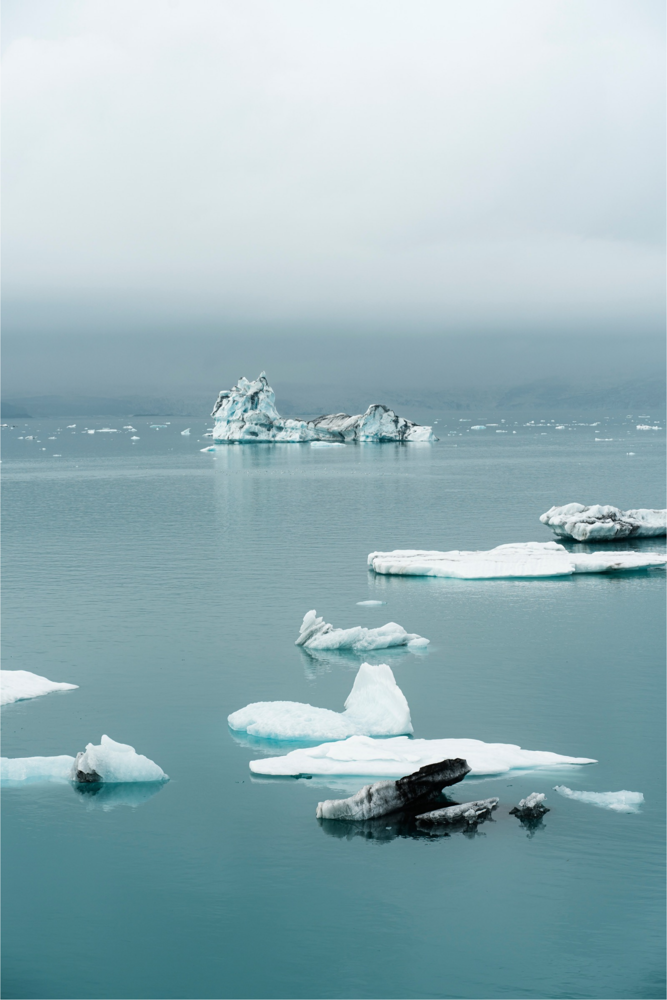
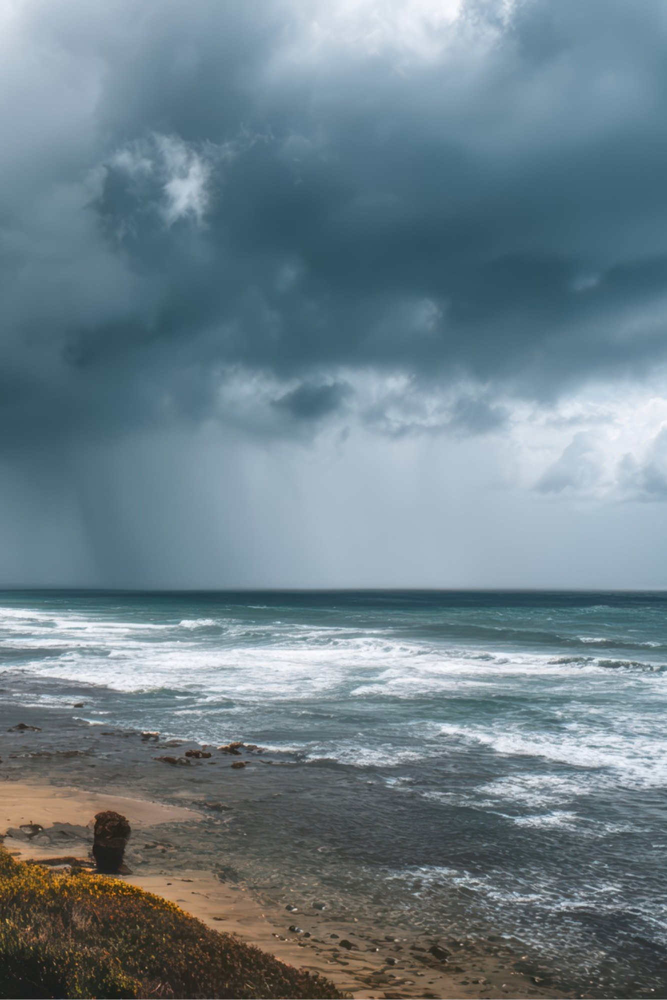
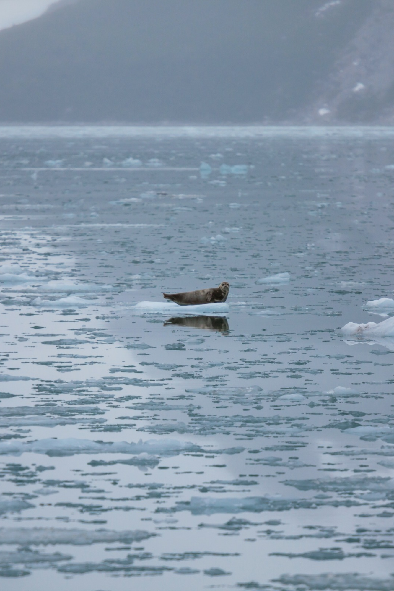
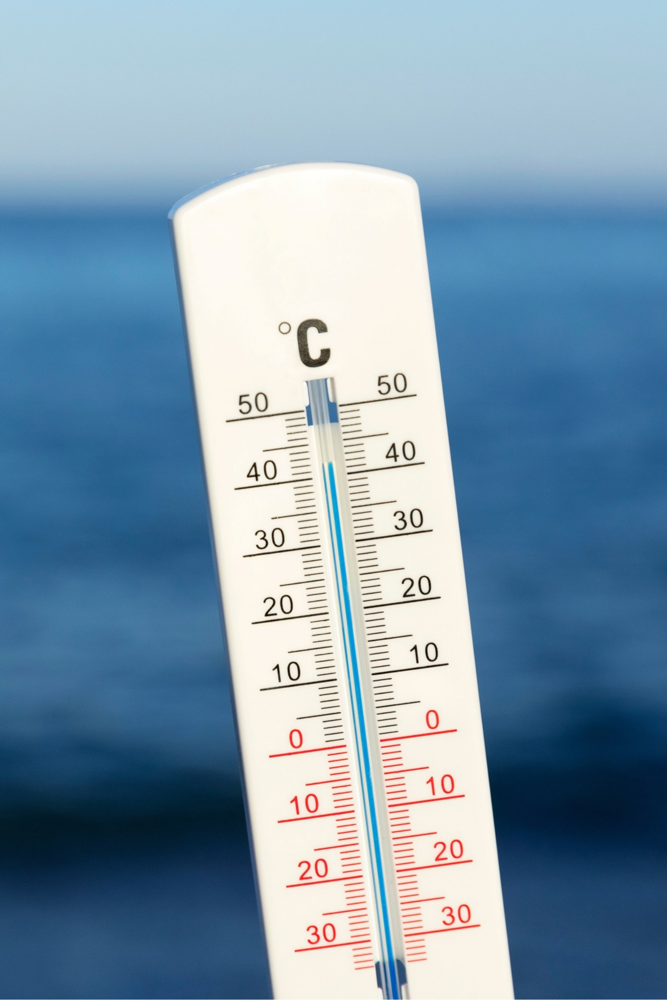

When ice caps melt, the now liquid water flows into our seas which causes sea levels to rise, a process which affects island nations as the higher sea level can drown crops and flood houses.

Melting ice caps can lead to unpredictable weather patterns as warming air and ocean temperatures create more frequent and intense coastal storms.

Many animals live on or rely on ice for hunting so with rising sea levels making sea ice melt, many animals find themselves without a home or food.

Less ice means less reflected heat, meaning more heat absorbed into the water. Many sea animals cannot handle the heat rise which causes a lack of seafood.
Most of the main issues with ice caps melting stem from sea leavel rise and sea temperature rise, issues which, while affecting the animals and environment, will also affect us as people especially as an island country.